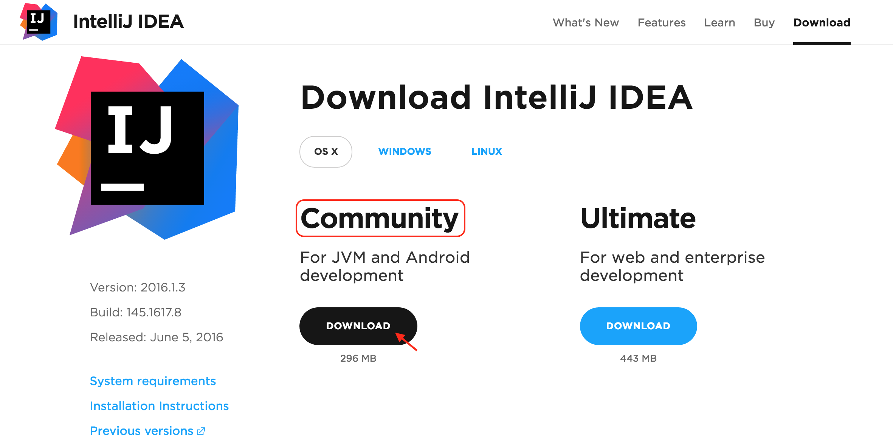
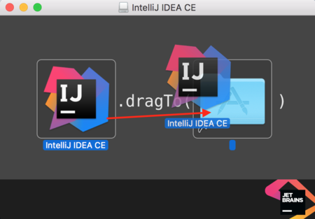

12. Mac: Install IntelliJ 2
Install IntelliJ (Mac instructions)
This text contains the most up-to-date installation instructions for installing IntelliJ as of June 2016.
1. Install IntelliJ
We’ll be using IntelliJ for the rest of this class. So, let’s download and install it first!
Download IntelliJ from this website.
This is the JetBrains website, and JetBrains is a company that aims to provide developers with helpful tools.
Once you get to this page, make sure the OS X version is selected, choose the free Community version, and click Download.

There are two versions of IntelliJ: Community and Ultimate. The Community version has all the tools we’ll need to write our own Java programs and it’s free!
And you should see a downloading file pop up at the bottom of your screen.
After the download finishes, click on it to open it and start the installation.
2. Add IntelliJ to your Applications
After IntelliJ is done installing, add it to the Applications that your computer can use by dragging and dropping it into your Applications Folder.

Congrats! Now you’re ready to open this up and write Java programs!